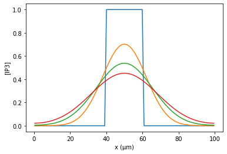

IP3 demo
[1]:
from neuron import h, crxd as rxd
h.load_file("stdrun.hoc")
[1]:
1.0
[2]:
dend = h.Section(name="dend")
dend.L = 100
dend.nseg = 101
[3]:
def my_initial(node):
if 0.4 < node.segment.x < 0.6:
return 1
else:
return 0
cyt = rxd.Region(h.allsec(), name="cyt", nrn_region="i")
ip3 = rxd.Species(cyt, name="ip3", d=1, initial=my_initial)
[4]:
from matplotlib import pyplot
def plot_it():
xs = [seg.x * dend.L for seg in dend]
ys = [seg.ip3i for seg in dend]
pyplot.plot(xs, ys)
[5]:
%matplotlib inline
h.finitialize(-65)
for tstop in [0, 50, 100, 150]:
h.continuerun(tstop)
plot_it()
pyplot.xlabel("x (µm)")
pyplot.ylabel("[IP3]")
[5]:
Text(0, 0.5, '[IP3]')

[6]:
nM = 1e-6 # relative to NEURON's default mM
h.finitialize(-65)
while dend(0.7).ip3i < 100 * nM:
h.fadvance()
print("crossed 100 nM at t = {} ms".format(h.t))
crossed 100 nM at t = 2.8250000000000064 ms
[7]:
ip3_vec = h.Vector()
ip3_vec.record(dend(0.7)._ref_ip3i)
t_vec = h.Vector()
t_vec.record(h._ref_t)
h.finitialize(-65)
h.continuerun(1000)
max_ip3 = max(ip3_vec)
print("peak ip3 =", max_ip3)
print("final ip3 =", dend(0.7).ip3i)
peak ip3 = 0.25437182627374194
final ip3 = 0.2103198308254167